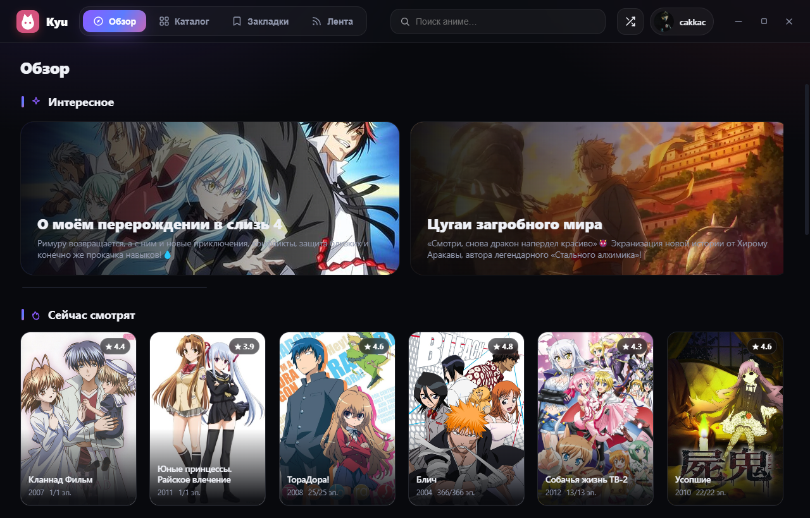
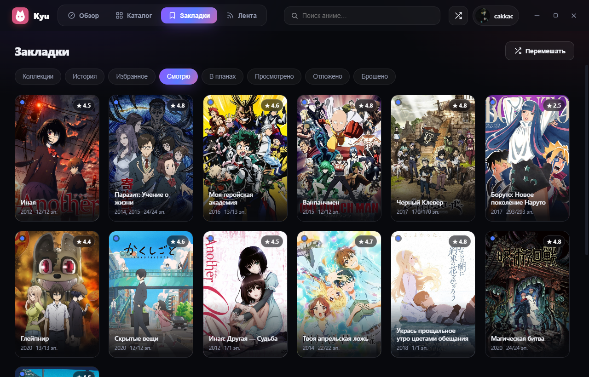
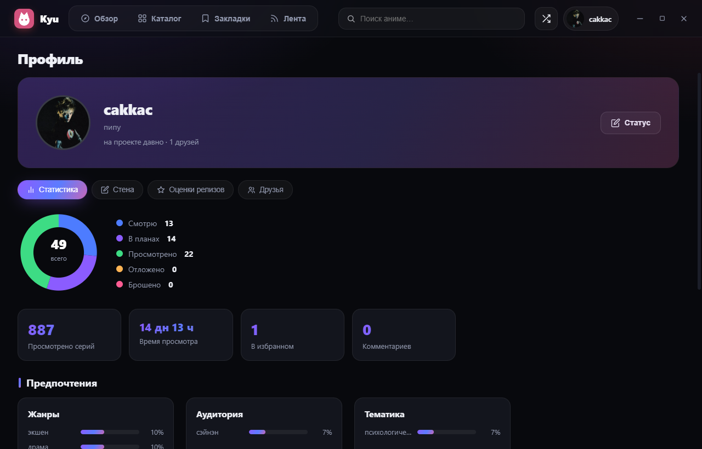
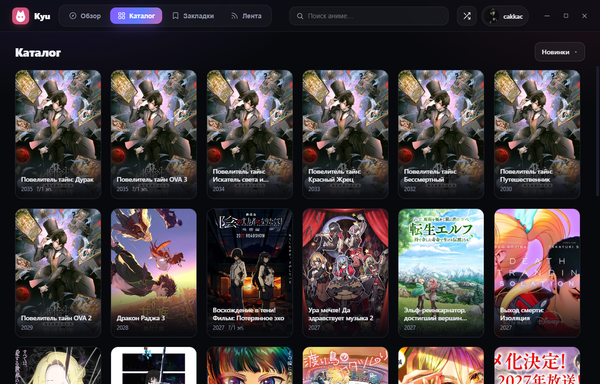
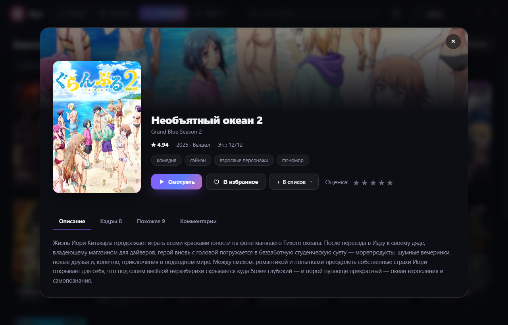

Kyu — неофициальный десктоп-клиент для AniXart. Смотри прямо в окне, со встроенным адблокером, веди списки и синхронизируйся с аккаунтом — всё в одном приложении.

Режет рекламу в плеерах Kodik и Sibnet — никаких прероллов.
Выбор озвучки и источника, полноэкранный режим, отметки серий.
Тысячи тайтлов, поиск по названию и по пользователям.
Смотрю · В планах · Просмотрено · Отложено · Брошено · Избранное · Коллекции.
Вход в аккаунт AniXart — прогресс, списки и история на всех устройствах.
Графики, кольцевая диаграмма, время просмотра, друзья и оценки.
Подписки, статьи с картинками, комментарии и реакции.
Просмотренные серии помечаются, плеер стартует с непросмотренной.
Тёмная тема, плавные анимации, своя навигация и управление окном.

Закладки и списки
Профиль со статистикой
Каталог
Страница релизаKyu — портативное приложение: скачал .exe, открыл, смотришь. Ничего не ставится в систему, можно носить на флешке. Твой аккаунт хранится локально и подтягивается из официального API AniXart.
Скачай Kyu и открой аниме в один клик.